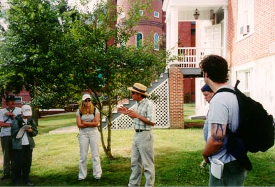

Day Two with Prof. Gary Gallagher / NK010727065902_417
7/27/2001

On day two, Prof. Gallagher started us at the Lutheran Seminary where he led a discussion about Robert E. Lee's options on July 2, 1863 and Longstreet's performance. Photo by JW.